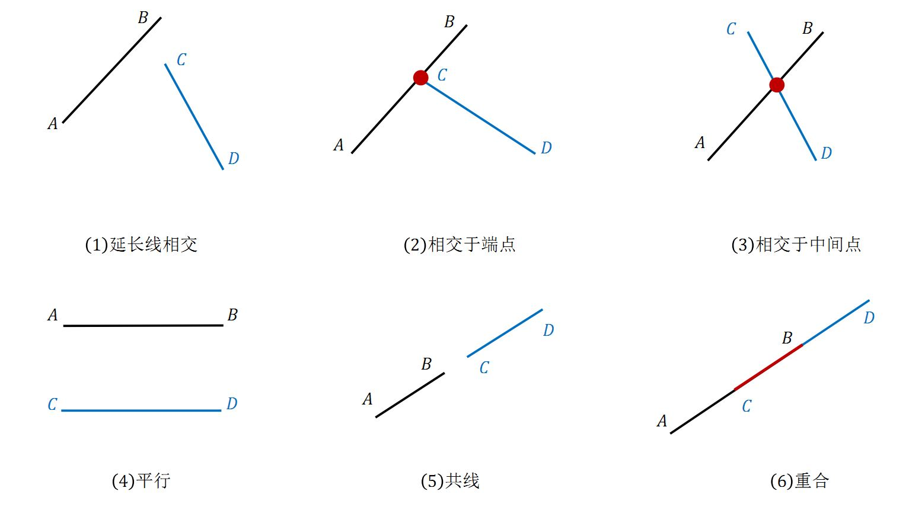
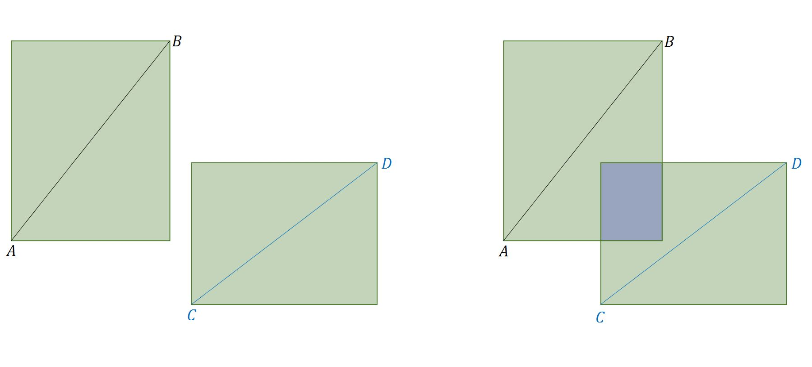

16. 几何¶
16.1. 仿射变换¶
仿射变换（Affine Transformation）是一种二维坐标到二维坐标之间的线性变换，变换前后保持以下属性：
- collinearity ：共线的点仍然共线。
- parallelism ：平行的线仍然平行。
- convexity ：凸集仍然是凸集。
- ratios of lengths ：不同线段的长度比值保持不变。
- barycenters ：点集的重心保持不变。
平移（translation）¶
缩放（scaling）¶
当 \(s_x=-1\) 或 \(s_y=-1\) 表示翻转（镜像）。
逆时针旋转（rotation）¶
错切（shear）¶
16.2. 线段相交¶
问题 ：给定两条线段四个端点的坐标，判断两条线段是否相交。
{kind=link}
方法一：跨立实验¶
快速排斥
分别以两条线段为对角线作矩形，如果两个矩形没有重合部分（IoU = 0），则两条线段一定不相交。反之不然。
{kind=link}
1 2 3 4 5 6 7 8 9 10 | // 计算重合部分的顶点坐标，可用于计算 IoU
// rec = {x1, y1, x2, y2} 分别表示矩形左下角和右上角的顶点坐标
bool isRectangleOverlap(vector<int>& rec1, vector<int>& rec2)
{
int left_x = max(rec1[0], rec2[0]);
int right_x = min(rec1[2], rec2[2]);
int bottom_y = max(rec1[1], rec2[1]);
int top_y = min(rec1[3], rec2[3]);
return (left_x < right_x && bottom_y < top_y);
}
|
跨立实验
如果两条线段相交，那么：以其中任意一条线段为标准，另一条线段的两个端点一定在这条线段（延长线）的两端，或者在这条线段上。
如果在两端，利用向量叉乘（cross product）可表示为：

- 向量叉乘/向量积
两个向量 \(\overrightarrow{a},\overrightarrow{b}\) 的向量积 \(\overrightarrow{a} \times \overrightarrow{b}\) 为一个向量， 它的方向与 \(\overrightarrow{a},\overrightarrow{b}\) 都垂直，且使 \(\overrightarrow{a},\overrightarrow{b}, \overrightarrow{a} \times \overrightarrow{b}\) 构成右手系； 它的模等于以 \(\overrightarrow{a},\overrightarrow{b}\) 为边的平行四边形的面积，即 \(|\overrightarrow{a} \times \overrightarrow{b}| = |\overrightarrow{a}||\overrightarrow{b}|\sin \theta\) ， 其中 \(\theta\) 为 \(\overrightarrow{a},\overrightarrow{b}\) 的夹角。
性质：
\[\begin{split}\overrightarrow{a} \times \overrightarrow{b} &=&\ - \overrightarrow{b} \times \overrightarrow{a} \\ \overrightarrow{a} \times \lambda \overrightarrow{a} &=&\ 0\end{split}\]$$ \overrightarrow{a} \times \overrightarrow{b} = \begin{vmatrix} \overrightarrow{i} & \overrightarrow{j} & \overrightarrow{k} \\ a_1 & a_2 & a_3 \\ b_1 & b_2 & b_3 \end{vmatrix} = \begin{vmatrix} a_2 & a_3\\ b_2 & b_3 \end{vmatrix} \overrightarrow{i} - \begin{vmatrix} a_1 & a_3\\ b_1 & b_3 \end{vmatrix} \overrightarrow{j} + \begin{vmatrix} a_1 & a_2\\ b_1 & b_2 \end{vmatrix} \overrightarrow{k} $$ $$ \begin{vmatrix} c_1 & c_2 \\ c_3 & c_4 \end{vmatrix} = c_1 c_4 - c_2 c_3 $$其中 \([O; \overrightarrow{i}, \overrightarrow{j}, \overrightarrow{k}]\) 是一个直角坐标系；二维向量的第三维可扩展为 0。
相交判断
- \((\overrightarrow{AB} \times \overrightarrow{AC}) \cdot (\overrightarrow{AB} \times \overrightarrow{AD}) > 0\) ： \(C\) 和 \(D\) 在线段 \(AB\) 的同一侧
- 若 \((\overrightarrow{CD} \times \overrightarrow{CA}) \cdot (\overrightarrow{CD} \times \overrightarrow{CB}) = 0\) ， \(A\) 或 \(B\) 在线段 \(CD\) 的延长线上，不相交。
- 若 \((\overrightarrow{CD} \times \overrightarrow{CA}) \cdot (\overrightarrow{CD} \times \overrightarrow{CB}) \neq 0\) ，不相交。
- \((\overrightarrow{AB} \times \overrightarrow{AC}) \cdot (\overrightarrow{AB} \times \overrightarrow{AD}) < 0\) ： \(C\) 和 \(D\) 在线段 \(AB\) 的不同侧
- 若 \((\overrightarrow{CD} \times \overrightarrow{CA}) \cdot (\overrightarrow{CD} \times \overrightarrow{CB}) \leqslant 0\) ，相交；如果等于 0，交点为 \(A\) 或 \(B\) 。
- 若 \((\overrightarrow{CD} \times \overrightarrow{CA}) \cdot (\overrightarrow{CD} \times \overrightarrow{CB}) > 0\) ，不相交。
- \((\overrightarrow{AB} \times \overrightarrow{AC}) \cdot (\overrightarrow{AB} \times \overrightarrow{AD}) = 0\) 可能是三种情形：
- \(C\) 或 \(D\) 在线段 \(AB\) 上（交于 \(C\) 或 \(D\) ）。
- \(C\) 或 \(D\) 在线段 \(AB\) 的延长线上（不相交），此时线段 \(CD\) 和线段 \(AB\) 可能是共线。
- 线段 \(CD\) 和线段 \(AB\) 部分重合。
方法二：直线交点方程¶
\(AB\) 的直线方程：\(\overrightarrow{OA} + \lambda \overrightarrow{AB}\) ， \(CD\) 的直线方程：\(\overrightarrow{OC} + \mu \overrightarrow{CD}\) ，
即：
交点方程：
即：
若行列式
表示两线段重合或平行。
若 \(\Delta \neq 0\) ，（利用 Cramer 法则）求出
只有当 \(0 \leqslant \lambda \leqslant 1,\ 0 \leqslant \mu \leqslant 1\) 两条线段才相交。否则交点在线段的延长线上。
16.3. 凸多边形¶
问题 ：按逆时针顺序给定多边形 \(n\) 个顶点的坐标，判断该多边形是否是凸多边形。
方案 ：凸多边形的特点是：对于任意一条边，其他的边都在它的同一侧；按逆时针顺序，下一条边 \(\overrightarrow{l}_{i+1}\) 一定在当前边 \(\overrightarrow{l}_i\) 的逆时针方向。 判断方法：如果 \(\overrightarrow{l}_i \times \overrightarrow{l}_{i+1}\) 符号为正，则在逆时针方向；符号为负，则在顺时针方向；大小为 0，表示平行/共线。